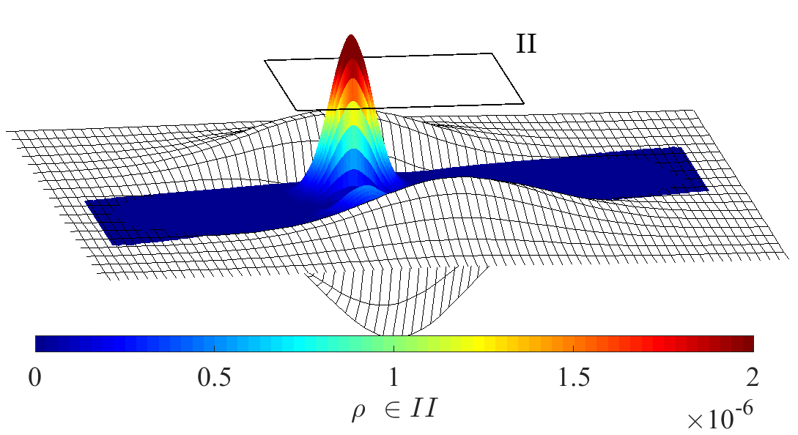

Kyriakos Flouris
Decoding the Universe with Code, Curved Spaces, and Quantum Ideas
Welcome to my digital portfolio! I am a Group Leader for Biomedical Machine Learning at the Biostatistics Unit, University of Cambridge, where I merge the realms of Artificial Intelligence, biostatistics, medical imaging, and theoretical physics. From developing novel generative models to exploring the mysteries of quantum physics and fluid dynamics, my work is driven by a fascination with the intersection of technology and nature. If you enjoy thinking about how AI can shape our understanding of the world, you are in the right place.
Research Interests
- Spatio-Temporal dynamics for forecasting
- Medical Imaging (Computed Tomography, Radiomics, Super-Resolution)
- Biostatistics (Genomics, Epidemiology)
- Generative Modeling and AI (Gradient flows, Normalizing Flows, Variational Autoencoders, Diffusion Models)
- Differential Geometry and Theoretical Physics
- Fluid Structure Interaction and Lattice Boltzmann Methods
- Quantum Machine Learning
Education
- Doctor of Sciences, ETH Zurich (2015-2019)
- Thesis: Flow and Dirac Particles on Curved and Topological Manifolds
- Developed lattice Boltzmann and Dirac equation solvers for fluid-structure interactions and quantum systems
- Master of Science, University of Cambridge (2013-2014)
- Part III of Physical NatSci Tripos - First Class (70.0% GPA)
- Courses in Particle Physics, Relativistic Cosmology, Gauge Field Theory, and Non-Linear Optics
- Bachelor of Science, University of Cambridge (2010-2013)
- Experimental and Theoretical Physics (2.1 - 67.5% GPA)
Professional Experience
- Senior Research Scientist, Computer Vision Lab, ETH Zurich (2019-present)
- Developing and applying deep learning techniques in medical imaging
- Leading projects on generative modeling, CT radiomics, and MRI super-resolution
- Exploring quantum-inspired machine learning algorithms and neural PDE solvers
- Supervising MSc and PhD research projects, and teaching at summer schools
- Research Assistant, Computational Physics for Engineering Materials, ETH Zurich (2015-2019)
- Developed fluid structure interaction models with lattice Boltzmann methods
- Researched Dirac fermions and topological matter
- Teaching assistant in Python programming and computational methods
- Research Assistant, Institute of Astronomy, ETH Zurich (2014-2015)
- Part of the MUSE project at the Very Large Telescope (VLT)
- Developed algorithms for data reduction and analysis
Publications
-
Generative human motion mimicking through feature extraction in denoising diffusion settings
A. Okupnik, J. Schneider, K. Flouris
arXiv preprint arXiv:2511.00011, 2025BibTeX
@article{okupnik2025generative, title={Generative human motion mimicking through feature extraction in denoising diffusion settings}, author={Okupnik, Anna and Schneider, Jonas and Flouris, Kyriakos}, journal={arXiv preprint arXiv:2511.00011}, year={2025} } -
Operator Flow Matching for Timeseries Forecasting
Y.Y.R. Lee, K. Flouris
arXiv preprint arXiv:2510.15101, 2025BibTeX
@article{lee2025operator, title={Operator Flow Matching for Timeseries Forecasting}, author={Lee, Yolanne Yi Ran and Flouris, Kyriakos}, journal={arXiv preprint arXiv:2510.15101}, year={2025} } -
Hyperbolic Optimization
Y. Wang, K. Flouris
arXiv preprint arXiv:2509.25206, 2025BibTeX
@article{wang2025hyperbolic, title={Hyperbolic Optimization}, author={Wang, Yanke and Flouris, Kyriakos}, journal={arXiv preprint arXiv:2509.25206}, year={2025} } -
Localized FNO for Spatiotemporal Hemodynamic Upsampling in Aneurysm MRI
K. Flouris, M. Halter, Y.Y.R. Lee, S. Castonguay, L. Jacobs, P. Dirix, J. Nestmann, S. Kozerke, E. Konukoglu
MICCAI Workshop on Machine Learning in Medical Imaging, 2025BibTeX
@inproceedings{flouris2025localized, title={Localized FNO for Spatiotemporal Hemodynamic Upsampling in Aneurysm MRI}, author={Flouris, Kyriakos and Halter, Moritz and Lee, Yolanne Yi Ran and Castonguay, Samuel and Jacobs, Luuk and Dirix, Pietro and Nestmann, Jonathan and Kozerke, Sebastian and Konukoglu, Ender}, booktitle={International Workshop on Machine Learning in Medical Imaging}, year={2025} } -
A Matrix Product State Model for Simultaneous Classification and Generation
A. Mossi, B. Žunkovič, K. Flouris
Quantum Machine Intelligence, 7(1):48, 2025BibTeX
@article{mossi2025matrix, title={A Matrix Product State Model for Simultaneous Classification and Generation}, author={Mossi, Alex and {\v{Z}}unkovi{\v{c}}, Bojan and Flouris, Kyriakos}, journal={Quantum Machine Intelligence}, volume={7}, number={1}, pages={48}, year={2025}, publisher={Springer} } -
Explicit and data-Efficient Encoding via Gradient Flow
K. Flouris, A. Volokitin, G. Bredell, E. Konukoglu
NeurIPS Workshop on Machine Learning and the Physical Sciences (ML4PS), 2024BibTeX
@inproceedings{flouris2024explicit, title={Explicit and data-Efficient Encoding via Gradient Flow}, author={Flouris, Kyriakos and Volokitin, Anna and Bredell, Gustav and Konukoglu, Ender}, booktitle={NeurIPS 2024 Workshop on Machine Learning and the Physical Sciences}, year={2024} } -
Energy-Based Prior Latent Space Diffusion Model for Reconstruction of Lumbar Vertebrae from Thick Slice MRI
Y. Wang, Y.Y.R. Lee, A. Dolfini, M. Reischl, E. Konukoglu, K. Flouris
MICCAI Workshop on Deep Generative Models, 2024BibTeX
@inproceedings{wang2024energy, title={Energy-Based Prior Latent Space Diffusion Model for Reconstruction of Lumbar Vertebrae from Thick Slice MRI}, author={Wang, Yanke and Lee, Yolanne Yi Ran and Dolfini, Aurelio and Reischl, Markus and Konukoglu, Ender and Flouris, Kyriakos}, booktitle={MICCAI Workshop on Deep Generative Models}, year={2024}, publisher={Springer} } -
Comparing stability and discriminatory power of hand-crafted versus deep radiomics: a 3D-printed anthropomorphic phantom study
O. Jimenez-del-Toro, C. Aberle, R. Schaer, M. Bach, K. Flouris, E. Konukoglu, et al.
12th European Workshop on Visual Information Processing (EUVIP), 2024BibTeX
@inproceedings{jimenez2024comparing, title={Comparing stability and discriminatory power of hand-crafted versus deep radiomics: a 3D-printed anthropomorphic phantom study}, author={Jimenez-del-Toro, Oscar and Aberle, Christoph and Schaer, Roger and Bach, Michael and Flouris, Kyriakos and Konukoglu, Ender and others}, booktitle={2024 12th European Workshop on Visual Information Processing (EUVIP)}, pages={1--5}, year={2024}, organization={IEEE} } -
Canonical Normalizing Flows for Manifold Learning
K. Flouris, E. Konukoglu
Advances in Neural Information Processing Systems (NeurIPS), 36, 2023BibTeX
@inproceedings{flouris2023canonical, title={Canonical normalizing flows for manifold learning}, author={Flouris, Kyriakos and Konukoglu, Ender}, booktitle={Advances in Neural Information Processing Systems}, volume={36}, pages={27294--27314}, year={2023} } -
Explicitly minimizing the blur error of variational autoencoders
G. Bredell, K. Flouris, K. Chaitanya, E. Erdil, E. Konukoglu
International Conference on Learning Representations (ICLR), 2023BibTeX
@inproceedings{bredell2023explicitly, title={Explicitly minimizing the blur error of variational autoencoders}, author={Bredell, Gustav and Flouris, Kyriakos and Chaitanya, Krishna and Erdil, Ertunc and Konukoglu, Ender}, booktitle={International Conference on Learning Representations}, year={2023} } -
3D-printed iodine-ink CT phantom for radiomics feature extraction: Advantages and challenges
M. Bach, C. Aberle, A. Depeursinge, O. Jimenez-del-Toro, R. Schaer, K. Flouris, et al.
Medical Physics, 50(9):5682-5697, 2023BibTeX
@article{bach20233d, title={3D-printed iodine-ink CT phantom for radiomics feature extraction-advantages and challenges}, author={Bach, Michael and Aberle, Christoph and Depeursinge, Adrien and Jimenez-del-Toro, Oscar and Schaer, Roger and Flouris, Kyriakos and others}, journal={Medical Physics}, volume={50}, number={9}, pages={5682--5697}, year={2023}, publisher={Wiley Online Library} } -
Curvature-induced quantum spin-Hall effect on a Möbius strip
K. Flouris, M. Mendoza Jimenez, H.J. Herrmann
Physical Review B, 105(23):235122, 2022BibTeX
@article{flouris2022curvature, title={Curvature-induced quantum spin-Hall effect on a M{\"o}bius strip}, author={Flouris, Kyriakos and Jimenez, Miller Mendoza and Herrmann, Hans J}, journal={Physical Review B}, volume={105}, number={23}, pages={235122}, year={2022}, publisher={APS} } -
Assessing radiomics feature stability with simulated CT acquisitions
K. Flouris, O. Jimenez-del-Toro, C. Aberle, M. Bach, R. Schaer, M.M. Obmann, et al.
Scientific Reports, 12(1):4732, 2022BibTeX
@article{flouris2022assessing, title={Assessing radiomics feature stability with simulated CT acquisitions}, author={Flouris, Kyriakos and Jimenez-del-Toro, Oscar and Aberle, Christoph and Bach, Michael and Schaer, Roger and Obmann, Markus M and others}, journal={Scientific Reports}, volume={12}, number={1}, pages={4732}, year={2022}, publisher={Nature Publishing Group} } -
The MUSE Atlas of Discs (MAD): Ionized gas kinematic maps and an application to diffuse ionized gas
M. den Brok, C.M. Carollo, S. Erroz-Ferrer, M. Fagioli, J. Brinchmann, E. Emsellem, D. Krajnović, R.A. Marino, M. Onodera, S. Tacchella, K. Flouris, et al.
Monthly Notices of the Royal Astronomical Society, 491(3):4089-4107, 2020BibTeX
@article{den2020muse, title={The MUSE Atlas of Discs (MAD): Ionized gas kinematic maps and an application to diffuse ionized gas}, author={den Brok, Mark and Carollo, C Marcella and Erroz-Ferrer, Santiago and Fagioli, Martina and Brinchmann, Jarle and Emsellem, Eric and Krajnovi{\'c}, Davor and Marino, Raffaella A and Onodera, Masato and Tacchella, Sandro and Flouris, Kyriakos and others}, journal={Monthly Notices of the Royal Astronomical Society}, volume={491}, number={3}, pages={4089--4107}, year={2020}, publisher={Oxford University Press} } -
Quantized alternate current on curved graphene
K. Flouris, S. Succi, H.J. Herrmann
Condensed Matter, 4(2):39, 2019BibTeX
@article{flouris2019quantized, title={Quantized alternate current on curved graphene}, author={Flouris, Kyriakos and Succi, Sauro and Herrmann, Hans J}, journal={Condensed Matter}, volume={4}, number={2}, pages={39}, year={2019}, publisher={MDPI} } -
Landau levels in wrinkled and rippled graphene sheets
K. Flouris, M. Mendoza Jimenez, H.J. Herrmann
International Journal of Modern Physics C, 30(10):1941006, 2019BibTeX
@article{flouris2019landau, title={Landau levels in wrinkled and rippled graphene sheets}, author={Flouris, Kyriakos and Jimenez, Miller Mendoza and Herrmann, Hans J}, journal={International Journal of Modern Physics C}, volume={30}, number={10}, pages={1941006}, year={2019}, publisher={World Scientific} } -
Confining massless Dirac particles in two-dimensional curved space
K. Flouris, M. Mendoza Jimenez, J.D. Debus, H.J. Herrmann
Physical Review B, 98(15):155419, 2018BibTeX
@article{flouris2018confining, title={Confining massless Dirac particles in two-dimensional curved space}, author={Flouris, Kyriakos and Jimenez, Miller Mendoza and Debus, Jens-Daniel and Herrmann, Hans J}, journal={Physical Review B}, volume={98}, number={15}, pages={155419}, year={2018}, publisher={APS} } -
Fluid structure interaction with curved space lattice Boltzmann
K. Flouris, M. Mendoza Jimenez, G. Munglani, F.K. Wittel, J.D. Debus, H.J. Herrmann
Computers & Fluids, 168:32-45, 2018BibTeX
@article{flouris2018fluid, title={Fluid structure interaction with curved space lattice Boltzmann}, author={Flouris, Kyriakos and Jimenez, Miller Mendoza and Munglani, Gautam and Wittel, Falk K and Debus, Jens-Daniel and Herrmann, Hans J}, journal={Computers \& Fluids}, volume={168}, pages={32--45}, year={2018}, publisher={Elsevier} }
Skills
- Programming Languages: Python, C++, MATLAB, Mathematica, LaTeX, Unix, GitHub
- Tools and Frameworks: PyTorch, Deep Learning, Generative Modeling, Lattice Boltzmann Methods
- Research Skills: Data Acquisition and Analysis, Theoretical Research, Teaching
Awards and Honors
- Top Reviewer Neurips 2025
- Master of Science, First Class Grade, University of Cambridge
- PHRT Funding, ETH Zurich - Radiomics and DeepFlow Projects
- Highest International Mark in Physics (GCE A-Level), Edexcel
Personal Interests
- AI and Numerics
- Theoretical Physics
- Skiing and Mountain Biking
- Design and Technology
- Football and Running

Thank you for visiting!
Kyriakos Flouris